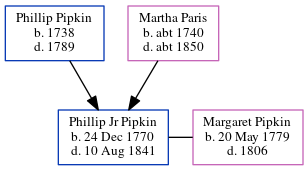

Phillip Jr Pipkin 1770 - 1841
[ Home ] | [ Calendar ] | [ Surnames Index ] | [ Census Index ] | [ Family History ]The child of Phillip Pipkin and Martha Paris, Phillip Pipkin, the four times great-uncle of Michele Copp (née Phillips), was born in Pitt, North Carolina, USA on Dec 24, 17701. He and married Margaret Pipkin in Davidson County, Tennessee, USA on Oct 11, 18102.
He died on Aug 10, 1841 in Gravois, St Louis, Missouri, USA1.
Parents
- Phillip Asher was born in 1738
- Martha was born c. 1740
Citations
- OneWorldTree Online publication - Provo, UT, USA: MyFamily.com, Inc.
- Geneanet Community Trees Index Ancestry.com Operations, Inc. (Geneanet Community Trees Index. Paris, France: Geneanet.)
Family Tree
Generated by ged2site. Last updated on Jun 6, 2024